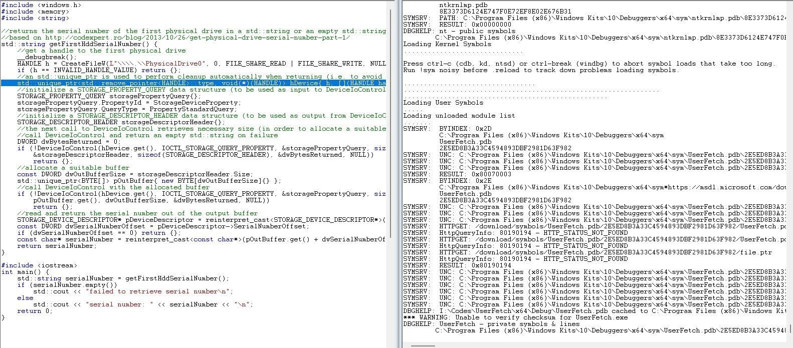
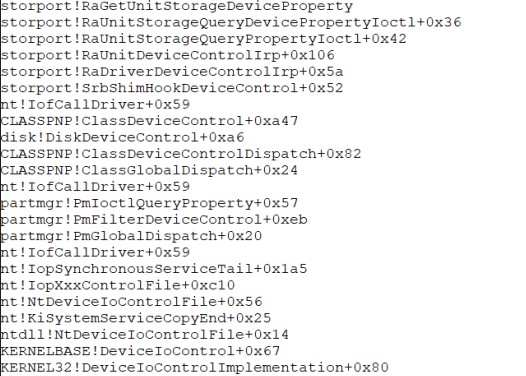
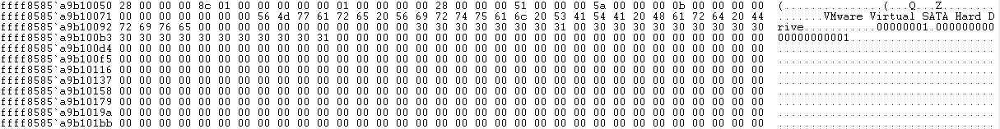

In this tutorial we are going to create a static disk drive serial number spoofer. This project will be a little long and need some basic knowledge about operation systems and reverse engineering. We are going to use visual studio community, IDA and windbg and I used windows 11 enterprise.
The first step is to find out how windows get that information. By googling you can see easily you have to use wmic commands. If you open CMD and execute the wmic diskdrive get serialnumber, you can retrieve all the disk serials. So that is logical analyzing wmic in windbg, however if you do that you will find out wmic tokenize commands and send them to the kernel and then retrieve data in a xml file and fetch from there. So for simplicity we are not going to analyze wmic. Instead we are going to access wmic command directly using C++ and use debug command to see which kernel API used to get those data.
But for the people who are interested in analyzing wmic i will point to a little hint to do it.First of all run your virtual OS and attach kernel debugger aka windbg to it. Break windbg and use !sym noisy command and then execute lm and finally .reload to reload all needed pdbs. Also keep it in mind to add debug filter print to your OS so you can see dbgprint data in debugger, just google it.After windbg downloaded all the necessary data open execute g command and run wmic on VM. After that execute .reload /f wmic.exe this will cause windbg download wmic pdb file so you can copy it from windbg path for pdbs and use it with ida to analyzing wmic.exe. After this we want to get in to the wmic.exe context to do that execute !process 0 0 wmic.exe keep note from you process ID and then execute .process /i YOURPROCESSID execute g command to get to the context.
Now execute the lm command and search for WMIC in the modules list, click on it and then you can see all the functions WMIC uses. Now for exampl you can put a break point on WMIC!CExecEngine::ExecuteCommand using bp WMIC!CExecEngine::ExecuteCommand and then execute g, now use a command like diskdrive to hit break point on windbg. You can use this method alongside wmic.exe and its pdb in IDA to analyze.
As I mentioned before wmic will make it harder to understand how windows get disk serials, instead we are going to get those data directly ourselves by calling wmic directly with our C++ program. I used this code this code, just compile it with a static linked library and copy it alongside its pdb file to your vm. Now we want to be able to use windbg to get kernel apis, but how do we put breakpoints on it?! There are two methods one is to breakpoint onload, and the other is simply adding __debugbreak(); before the place we want to hit. I added this command immediately after main. The other method is useful when we do not have access to source code.For those who want to know how to do it the other way, just follow the instructions below.
1.!gflag +ksl
2.sxe ld myfile.exe
3.g
4.execute your file, you will hit break point onload
5.!gflag -ksl (do not need flag after hit)
But in our case we have access to source code so just add debug instruction after main and then copy .pdb and your exe to your vm, also set your source code path in windbg. After that simply execute your file on your VM, this will cause windbg to hit breakpoint, then use the .reload command to reload out program pdb. I compiled my file with UserFetch name, if you did every thing right you should see something like below:
Loading User Symbols
.....
Loading unloaded module list
.......
SYMSRV: BYINDEX: 0x2D
C:\Program Files (x86)\Windows Kits\10\Debuggers\x64\sym
UserFetch.pdb
2E5ED8B3A33C4594893DBF2981D63F982
SYMSRV: UNC: C:\Program Files (x86)\Windows Kits\10\Debuggers\x64\sym\UserFetch.pdb\2E5ED8B3A33C4594893DBF2981D63F982\UserFetch.pdb - path not found
SYMSRV: UNC: C:\Program Files (x86)\Windows Kits\10\Debuggers\x64\sym\UserFetch.pdb\2E5ED8B3A33C4594893DBF2981D63F982\UserFetch.pd_ - path not found
SYMSRV: UNC: C:\Program Files (x86)\Windows Kits\10\Debuggers\x64\sym\UserFetch.pdb\2E5ED8B3A33C4594893DBF2981D63F982\file.ptr - path not found
SYMSRV: RESULT: 0x80070003
SYMSRV: BYINDEX: 0x2E
C:\Program Files (x86)\Windows Kits\10\Debuggers\x64\sym*https://msdl.microsoft.com/download/symbols
UserFetch.pdb
2E5ED8B3A33C4594893DBF2981D63F982
SYMSRV: UNC: C:\Program Files (x86)\Windows Kits\10\Debuggers\x64\sym\UserFetch.pdb\2E5ED8B3A33C4594893DBF2981D63F982\UserFetch.pdb - path not found
SYMSRV: UNC: C:\Program Files (x86)\Windows Kits\10\Debuggers\x64\sym\UserFetch.pdb\2E5ED8B3A33C4594893DBF2981D63F982\UserFetch.pd_ - path not found
SYMSRV: UNC: C:\Program Files (x86)\Windows Kits\10\Debuggers\x64\sym\UserFetch.pdb\2E5ED8B3A33C4594893DBF2981D63F982\file.ptr - path not found
SYMSRV: HTTPGET: /download/symbols/UserFetch.pdb/2E5ED8B3A33C4594893DBF2981D63F982/UserFetch.pdb
SYMSRV: HttpQueryInfo: 80190194 - HTTP_STATUS_NOT_FOUND
SYMSRV: HTTPGET: /download/symbols/UserFetch.pdb/2E5ED8B3A33C4594893DBF2981D63F982/UserFetch.pd_
SYMSRV: HttpQueryInfo: 80190194 - HTTP_STATUS_NOT_FOUND
SYMSRV: HTTPGET: /download/symbols/UserFetch.pdb/2E5ED8B3A33C4594893DBF2981D63F982/file.ptr
SYMSRV: HttpQueryInfo: 80190194 - HTTP_STATUS_NOT_FOUND
SYMSRV: RESULT: 0x80190194
SYMSRV: UNC: C:\Program Files (x86)\Windows Kits\10\Debuggers\x64\sym\UserFetch.pdb\2E5ED8B3A33C4594893DBF2981D63F982\UserFetch.pdb - path not found
SYMSRV: UNC: C:\Program Files (x86)\Windows Kits\10\Debuggers\x64\sym\UserFetch.pdb\2E5ED8B3A33C4594893DBF2981D63F982\UserFetch.pdb - path not found
SYMSRV: UNC: C:\Program Files (x86)\Windows Kits\10\Debuggers\x64\sym\UserFetch.pdb\2E5ED8B3A33C4594893DBF2981D63F982\UserFetch.pd_ - path not found
SYMSRV: UNC: C:\Program Files (x86)\Windows Kits\10\Debuggers\x64\sym\UserFetch.pdb\2E5ED8B3A33C4594893DBF2981D63F982\UserFetch.pd_ - path not found
SYMSRV: UNC: C:\Program Files (x86)\Windows Kits\10\Debuggers\x64\sym\UserFetch.pdb\2E5ED8B3A33C4594893DBF2981D63F982\file.ptr - path not found
SYMSRV: UNC: C:\Program Files (x86)\Windows Kits\10\Debuggers\x64\sym\UserFetch.pdb\2E5ED8B3A33C4594893DBF2981D63F982\file.ptr - path not found
DBGHELP: I:\Codes\UserFetch\x64\Debug\UserFetch.pdb cached to C:\Program Files (x86)\Windows Kits\10\Debuggers\x64\sym\UserFetch.pdb\2E5ED8B3A33C4594893DBF2981D63F982\UserFetch.pdb
Also you have to be able to see your source code alongside other information like below.

Now this part is very very important, we want to be able to go to the kernel side and continue tracing kernel APIs there. To do this we need to find syscall instructions first.To do this just execute pc and then t command respectively till you reach a syscall. After that we need to find a function that will cause dispatch from user mode to kernel mode using the SSD table which I will explain later. execute p command till you reach first if then using t to trace in to it and then use mentioned instructions.
After a while you will hit DeviceIoControl which is look like below:
ntdll!NtDeviceIoControlFile:
0033:00007ff9`27a23fe0 4c8bd1 mov r10,rcx
0033:00007ff9`27a23fe3 b807000000 mov eax,7
0033:00007ff9`27a23fe8 f604250803fe7f01 test byte ptr [SharedUserData+0x308 (00000000`7ffe0308)],1
0033:00007ff9`27a23ff0 7503 jne ntdll!NtDeviceIoControlFile+0x15 (00007ff9`27a23ff5)
0033:00007ff9`27a23ff2 0f05 syscall
0033:00007ff9`27a23ff4 c3 ret
0033:00007ff9`27a23ff5 cd2e int 2Eh
0033:00007ff9`27a23ff7 c3 ret
0033:00007ff9`27a23ff8 0f1f840000000000 nop dword ptr [rax+rax]
Now we have to find out which function will called in kernel side. To do this first we look into the value that will put in to the eax register which ix 0x7, now we execute following command, dd nt!KiServiceTable+0xEAXValue*0x4 L1 which in our case is dd nt!KiServiceTable+0x7*0x4 L1 and that will cause windbg return first value of table. after that windbg will return fffff801`6d0cad8c 05c38306 now the second value is the value we want and we have to use in the following instruction u KiServiceTable + (0xReturnedValue >>> 4) so we have to execute u KiServiceTable + (0x05c38306 >>> 4), after that you see instructions like below:
nt!NtDeviceIoControlFile:
fffff801`6d68e5a0 4883ec68 sub rsp,68h
fffff801`6d68e5a4 8b8424b8000000 mov eax,dword ptr [rsp+0B8h]
fffff801`6d68e5ab c644245001 mov byte ptr [rsp+50h],1
fffff801`6d68e5b0 89442448 mov dword ptr [rsp+48h],eax
fffff801`6d68e5b4 488b8424b0000000 mov rax,qword ptr [rsp+0B0h]
fffff801`6d68e5bc 4889442440 mov qword ptr [rsp+40h],rax
fffff801`6d68e5c1 8b8424a8000000 mov eax,dword ptr [rsp+0A8h]
fffff801`6d68e5c8 89442438 mov dword ptr [rsp+38h],eax
If you want to learn more about SSDT you can read this.
Now put a break point in there using bp nt!NtDeviceIoControlFile, and use g to hit that break point. After breakpoint hit you must confirm that you are still in our process context using !process -1 0 command and it have to be your exe file.Now after this part is a little bit tricky you might get BSOD multiple times, but you have to open the call stack tab and use t and pc command till you find out all the kernel APIs called to get disk serial. After a long trace you have to see something like below which contains all the kernel APIs used to get serialnumber.

Now you know that storport.sys is the driver that gets that data, so first we get its pdb file to be able to analyze it with IDA.Simply use lm to list all modules and then find storport click on it and then click on browse all global symbols, that will cause windbg download the pdb file. Now copy that pdb file and paste it into your VM. and on your VM go to Local Disk (C:)\Windows\System32\drivers and copy storport.sys beside its pdb and load it into IDA.
Search for RaGetUnitStorageDeviceProperty and decompile it using F5 key.You can see that it uses some kind of struct and puts data into an array finally and returns it if you analyze the decompiled source. To confirm this we just need a simple debug to confirm this function gets serial disks. So once more run the compiled exe file and put a breakpoint on RaGetUnitStorageDeviceProperty using bp storport!RaGetUnitStorageDeviceProperty command. Simply keep continuing till you hit the desired break point, now if you analyze the codes of this driver in IDA, you can see the final call instruction at the bottom. Using the pc command we debug the instruction to get to that call which you can see it below.
fffff801`6edd573c e8bfa9f9ff call storport!memcpy (fffff801`6ed70100)
fffff801`6edd5741 458bc6 mov r8d,r14d
fffff801`6edd5744 488d542420 lea rdx,[rsp+20h]
fffff801`6edd5749 498bcc mov rcx,r12
fffff801`6edd574c e8afa9f9ff call storport!memcpy (fffff801`6ed70100)
fffff801`6edd5751 33c0 xor eax,eax
fffff801`6edd5753 458937 mov dword ptr [r15],r14d
fffff801`6edd5756 488b8db0000000 mov rcx,qword ptr [rbp+0B0h]
fffff801`6edd575d 4833cc xor rcx,rsp
fffff801`6edd5760 e83b9bf9ff call storport!_security_check_cookie (fffff801`6ed6f2a0)
fffff801`6edd5765 4881c4c0010000 add rsp,1C0h
By some analyzing you can find out code will keep data in [rsp+20h], simply if we chek this place on memory you see the below information there:

So we confirmed this is the function, however the used struct is still unknown. We will discuss how to find it in the next part, but we mention one of the time consuming methods here and keep the neat method for the next part.You can use dt module!* which will be dt storport!* to get all the structs that strport.sys uses and then analyze them manually. If you spend a lot of time doing reverse engineering you can confirm the struct is _RAID_UNIT_EXTENSION which will be discussed in next part.